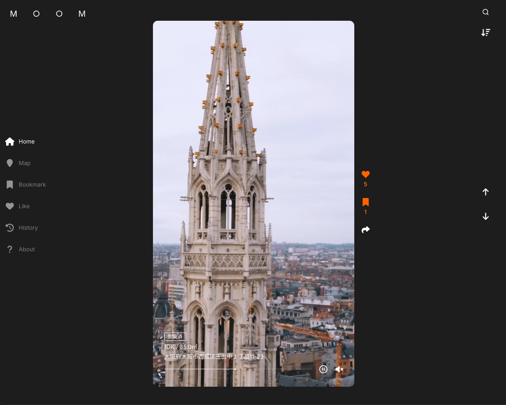
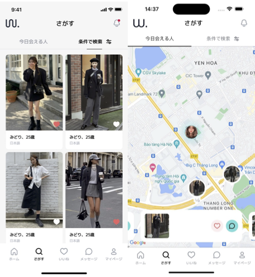
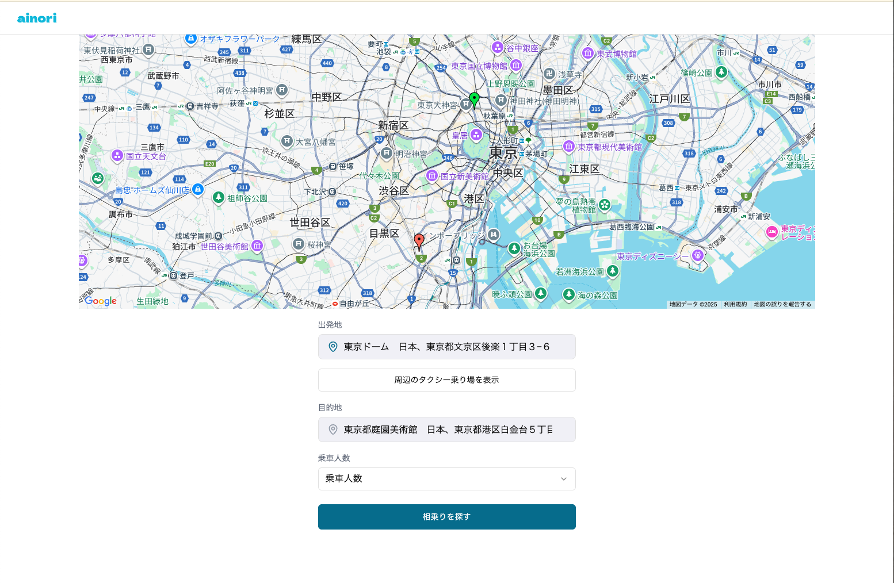

08
主要プロジェクト事例
Major Project Cases (Continued)
DXツール / AI・モバイル開発実績

DX / Tool
translate
Realstate short video Platform
(Short video)
高額賃貸に特化した「仲介・契約業務OS」。Itand等の外部サービスと連携（RPA/スクレイピング前提）して物件情報を自動取り込みし、管理会社・保証会社・鍵ルールなどを Policy として保持。内見予約（カレンダー同期）→申込→審査進捗→契約（電子/紙のモード判定）→入金/精算→鍵受け渡しまでを一気通貫で運用し、オペレーションは例外対応に集中できる設計。
規模／担当範囲
要件定義〜設計〜実装〜テスト、開発期間：3ヶ月
Major Tech
Ruby on Rails
React
AWS MediaConvert
GMO auto bank transfer
Playwright RPA
source
Source: Client Project

Matching / CtoC
psychology
Matching app
(Multi-languages matching app)
・日韓女性向けマッチング（安全性重視） ・プロフィール作成／本人確認（KYC） ・多言語対応（自動翻訳・言語切替） ・MAP検索／チャット／いいね機能 ・チケット購入（決済・利用履歴）
規模／担当範囲
プロトタイプ開発〜本番UI実装、開発期間：3ヶ月
Major Tech
Flutter
Supabase
Ruby on Rails
Goolge Translate
source
Source: Client Project

Mobile / Event
qr_code_scanner
Sharing Taxi
(Sharing taxi app)
ainori（アイノリ）は、ライブやイベントの行き帰りなどで 同じ方面の人同士をつなぎ、タクシーを割り勘で相乗りできるWebマッチングサービスです。  アプリ不要でスマホから手軽に募集・参加でき、混雑時でも移動をお得＆スムーズにします。
規模／担当範囲
アプリ設計〜開発〜ストア申請、開発期間：5ヶ月
Major Tech
Reactjs
Firebase
Google MAP
source
Source: Client Project